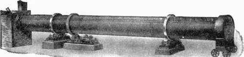

Preparation And Mixing Of The Raw Materials. Part 2
Description
This section is from the book "Cement And Concrete", by Louis Carlton Sabin. Also available from Amazon: Cement and Concrete.
Preparation And Mixing Of The Raw Materials. Part 2
23. Styles Of Kilns
The various styles of kilns in use may be divided into four classes, namely: (1) common dome kilns, (2) Continuous kilns, (3) Chamber and ring kilns, and (4) Rotary kilns. The Dome Kiln is the simplest type. The chamber is usually egg-shaped. Cement-brick and coke are piled in alternate layers, the use of the proper amount of the latter requiring much skill, as it is a matter of experience. As the draft in the kiln varies with the weather, this method of burning is more or less at the mercy of the winds. When the burning is complete, the kiln is allowed to cool before removing the clinker, and thus much heat is lost, and the lining of the kiln is destroyed by alternate heating and cooling. The amount of underburned and overburned clinker is likely to be large. The output is small, and fuel expense high. This style of kiln was formerly used for Portland cement, but is now confined almost entirely to burning natural cement and is then used as a continuous kiln, material being charged at the top as the clinker is withdrawn at the bottom.
The Dietsch Kiln
The Dietsch Kiln is one of the best examples of the second type, or continuous kiln. The slurry, in the form of bricks, is introduced at the base of the stack, into what may be called the heating chamber. Below this there is a right angle with a short horizontal section, over which the hot slurry is raked, to fall into the burning chamber. The clinker in the lower part of the latter is cooled by the air entering through the grates, while the slurry in the upper chamber is heated by the gases from the burning zone. At intervals a portion of the clinker, partially cooled, is removed at the bottom; this causes a general settlement in the kiln and leaves a space at the top of the burning chamber, into which the dried clinker from above is raked, and more fuel added. This kiln uses small coal for fuel and is more economical than the dome type.
The distinguishing feature of the Schofer kiln is the contraction of the dome at the point where combustion takes place, concentrating the draft at this point. The air entering the shaft at the bottom cools the clinker already burned, while the gases from the clinker burning in the central section serve to dry the raw bricks above. Several kilns of this type are in successful operation in this country.
24. Chamber Kilns
Chamber Kilns are used largely in England with coke as fuel. The gases from the kiln are made to pass over the slurry spread on brick floors, the kiln proper being at one end of this chamber and the stack at the other. These kilns are intermittent, have a comparatively small output, and require considerable labor.
The Hoffman Ring Kiln
The Hoffman Ring Kiln consists of a series of compartments built around a large central stack. The chambers communicate by means of flues in such a way that the smoke and hot gases from one may be passed through other chambers before reaching the chimney. The kiln may be either "up draft" or "down draft," according to the direction in which the heat is drawn through the chamber. The compartments are charged from the sides, and when the moisture has been driven off from the material in the chamber first fired, the gases from this chamber are passed through the adjacent chambers, which have in the meantime been filled with raw materials. Although this kiln is economical of fuel if run continuously, much labor is required to charge and empty it. This type is not used in the United States, though it has been employed to some extent in Germany.
25. Rotary Kilns
Although rotary kilns for other purposes had been in use for some time, the first patent for a process of manufacture of cement by their use was issued in 1877 to Mr. T. R. Crampton. The method, apparently, did not pass beyond the stage of laboratory experiment until 1885, when Frederick Ransome, of England, patented a rotary kiln, which, however, required many important modifications to make it a success.
THE BONNOT COMPANY ROTARY KILN.
About 1888 Mr. J. G. Sanderson and Dr. Geo. Duryee made some successful experiments with the rotary kiln for wet mixtures, and in the following year experiments were begun at the | works of the Atlas Portland Cement Co. under Mr. P. Giron, which resulted in the construction of a practical kiln for burning dry mixtures. Prof. Spencer B. Newberry, at about the same time, perfected the rotary process for wet materials at Warners, N. Y., and Sandusky, Ohio.
A rotary kiln as used for the burning of cement consists of a steel cylinder from five to seven feet in diameter and sixty feet or more in length. This cylinder rests on two sets of rollers with its axis inclined to the horizontal about one foot in twenty, and is revolved slowly by gearing. (See cut.) The mixture to be burned is introduced at the upper or stack end of the cylinder, while a jet of powdered coal, or sometimes of fuel gas or oil, is injected at the lower end through a special burner. As the cylinder revolves, the material works slowly towards the lower end, the clinkering temperature being maintained, roughly speaking, throughout the lower twenty feet of the kiln. This portion of the kiln must be lined with the most fire-resisting brick; as the clinker acts upon fire brick lining to form a fusible compound at the high temperatures required in the burning, a coating of fused cement clinker is sometimes beaten down upon the lining while it is still plastic; this adheres to the brick and protects them somewhat from further injury. The clinker as discharged from the lower end is in rough, greenish black, balls varying in size from a quarter inch to an inch in diameter.
The dried and pulverized coal is fed through a special burner supplied with a blast, the greater part of the air necessary for combustion entering through openings in and around the hood of the kiln. The burning may be controlled by the rate of feeding the mix, the rate of revolution of the kiln, or the amount of coal and air supply, the temperature being determined by the appearance of the molten mass. The crowding of a kiln to increase the output increases considerably the fuel Cost per barrel on account of the great quantity of air introduced which must be heated.
Continue to:
- prev: 22. Details Of The Manufacture. Preparation And Mixing Of The Raw Materials
- Table of Contents
- next: Preparation And Mixing Of The Raw Materials. Part 3